1 Gráficos básicos en el análisis de datos
Esta sección es una breve introducción a los gráficos más comunes para analizar conjuntos de datos. Para ello, utilizaremos el paquete ggplot2 (“gg” para “Grammar of Graphics”).
#install.packages("ggplot2")
library(ggplot2) #carga la librería ggplot2Empezaremos con la función básica qplot(“quick plot”) de este paquete. Una descripción abreviada de esta función es
qplot(x, y=NULL, data, geom="auto", xlim = c(NA, NA), ylim =c(NA, NA))-
x: valores en el eje de abscisas. -
y: valores en el de ordenadas (opcional). -
data: data.frame de donde salen los datos (opcional). -
geom: elementos gráficos o geometrías (“point”,line”,“bar”,…). Por defecto, “point” siyviene especificado, e “histogram” si sólo se especificax. -
xlim,ylim: limites en los ejes dexey.
Otros argumentos relacionados con los ejes y el titulo del gráfico son: main: titulo del gráfico; xlab, ylab: etiquetas los los ejes; log: ejes en escala log. Los valores permitidos son “x”, “y” o bien “xy”.
1.1 Distribución de una variable
Para intentar ver algo en un conjunto de datos, lo primero que se puede hacer es averiguar como se distribuyen sus valores. En R, hay funciones básicas (summary, stem, table, …) que permiten tener una idea de esta distribución.
El tipo de representación gráfica de la distribución cambia según la naturaleza de la variable en estudio. Una variable cuantitativa toma valores numéricos. Para una variable cuantitativa, se suele recurrir a un histograma o bien a un diagrama de caja para describir su distribución. Mientras que para variables cualitativas (o categóricas), se utilizará un diagrama de barras.
1.1.1 Histograma
Para ilustrar la descripción gráfica de la distribución de una variable numérica, se utiliza la base de datos msleep que contiene información sobre el tiempo de sueño (en horas) de mamíferos:
msleep # ?msleep para más detalles## # A tibble: 83 x 11
## name genus vore order conservation sleep_total sleep_rem sleep_cycle awake brainwt bodywt
## <chr> <chr> <chr> <chr> <chr> <dbl> <dbl> <dbl> <dbl> <dbl> <dbl>
## 1 Cheetah Acinonyx carni Carnivora lc 12.1 NA NA 11.9 NA 50
## 2 Owl monkey Aotus omni Primates <NA> 17 1.8 NA 7 0.0155 0.48
## 3 Mountain beaver Aplodontia herbi Rodentia nt 14.4 2.4 NA 9.6 NA 1.35
## 4 Greater short-tailed sh~ Blarina omni Soricomorp~ lc 14.9 2.3 0.133 9.1 0.00029 0.019
## 5 Cow Bos herbi Artiodacty~ domesticated 4 0.7 0.667 20 0.423 600
## 6 Three-toed sloth Bradypus herbi Pilosa <NA> 14.4 2.2 0.767 9.6 NA 3.85
## 7 Northern fur seal Callorhin~ carni Carnivora vu 8.7 1.4 0.383 15.3 NA 20.5
## 8 Vesper mouse Calomys <NA> Rodentia <NA> 7 NA NA 17 NA 0.045
## 9 Dog Canis carni Carnivora domesticated 10.1 2.9 0.333 13.9 0.07 14
## 10 Roe deer Capreolus herbi Artiodacty~ lc 3 NA NA 21 0.0982 14.8
## # ... with 73 more rows#summary(msleep$sleep_total) #tiempo total de sueño (en horas)
stem(msleep$sleep_total)##
## The decimal point is at the |
##
## 0 | 9
## 2 | 79013589
## 4 | 0423346
## 6 | 23307
## 8 | 03446779114456788
## 10 | 01113346900135
## 12 | 15555880578
## 14 | 234456996889
## 16 | 604
## 18 | 01479qplot(sleep_total,data=msleep) #histograma 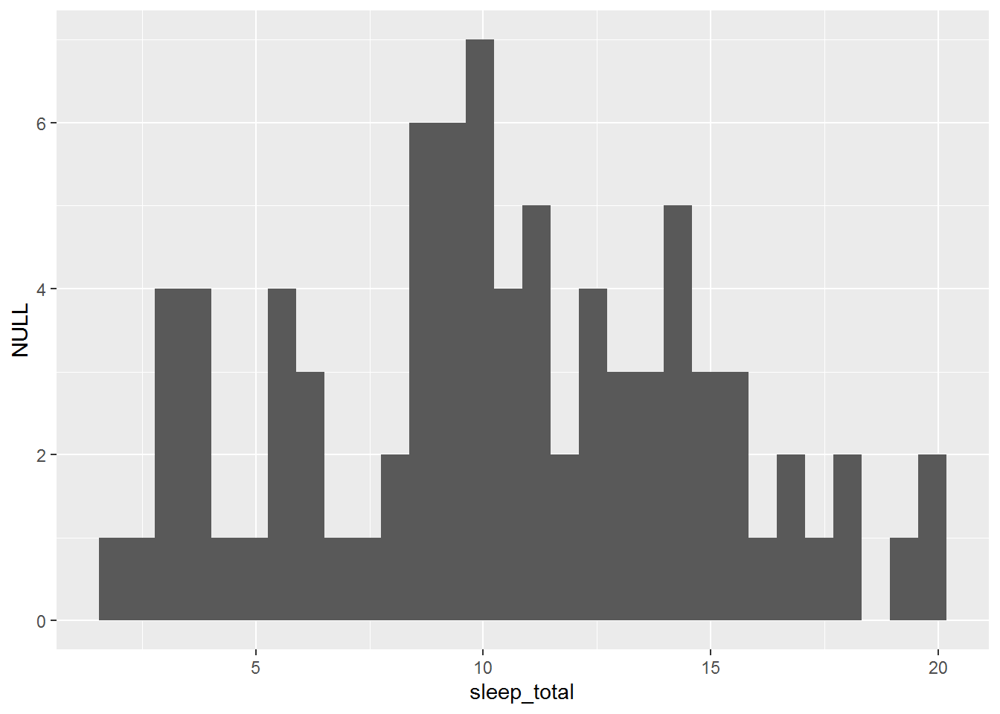
La altura de cada barra en el histograma es proporcional a la frecuencia de datos que caen en el intervalo correspondiente. Por defecto, en la función qplotel número de barras es igual a bins=30. Este valor es muy arbitrario. Otra alternativa consiste en elegir un número \(k\) de barras en función del tamaña muestral \(n\), como por ejemplo, el criterio de Sturges (\(k=1+\log_2(n)\)) o el criterio de Rule (\(k=2n^{1/3}\)). Abajo, un histograma con un número de barras que sigue este ultimo criterio:
qplot(sleep_total,data=msleep,bins=8,color=I("grey70"),fill=I("lightblue"))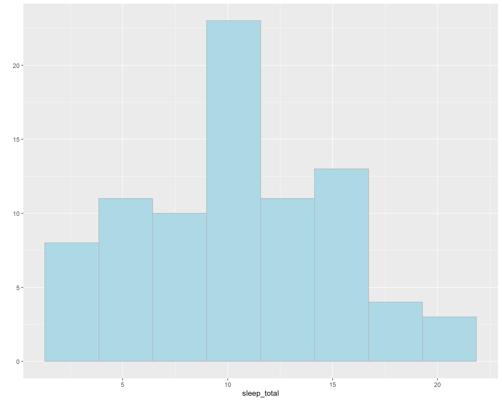
El argumento fillcontrola el color de relleno de las barras y el argumento color el color del borde. Para especificar un color concreto se utiliza la función I(). Si el color varía con otra variable z, se especifica esta dependencia escribiendo fill=z.
qplot(sleep_total,data=msleep,bins=12,fill=vore) #distribución del tiempo de sueño según dieta del mamifero. Representación poco adecuada en general.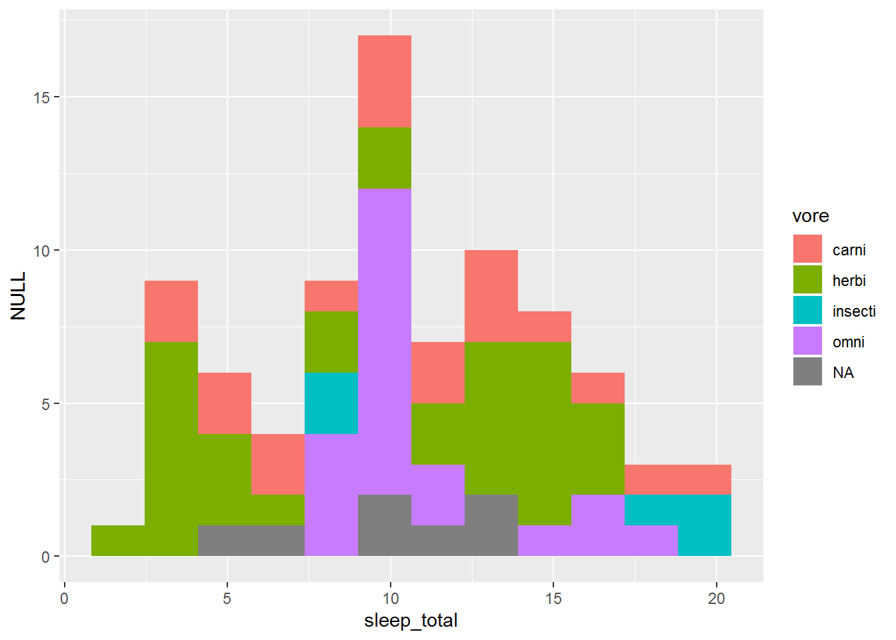
1.1.2 Diagrama de caja (boxplot)
Otra representación similar es el diagrama de caja. Este diagrama describe la distribución de una variable numérica mediante una caja y unos segmentos que acotan las regiones donde la variable tiene el grueso de sus valores. Esta representación es menos fina que la del histograma pero es más robusta (menos sensible a valores extremos).
Esta representación es especialmente adecuada cuando se quiere describir como varía la distribución de una variable numérica en función de una variable categórica. Así, la distribución del tiempo de sueño según la dieta del mamífero se puede representar de la siguiente manera:
qplot(vore,sleep_total,data=msleep,geom="boxplot",xlab="Dieta")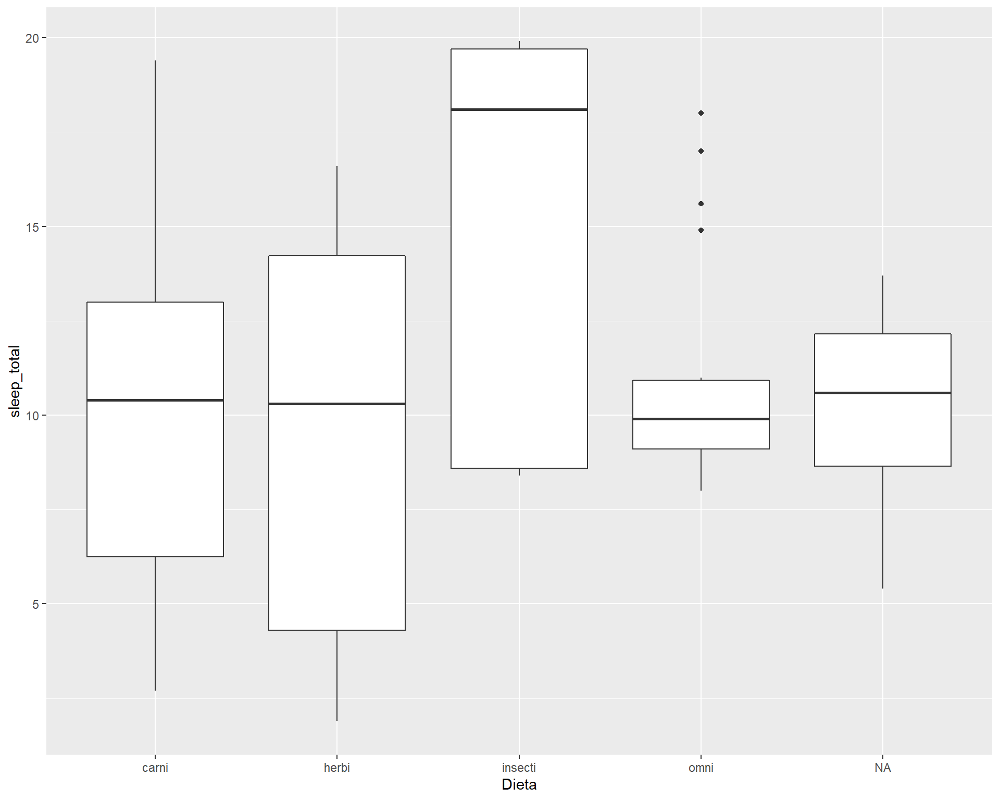
Cargar la base de datos de la encuesta nacional americana nhs y representar la distribución del índice de masa corporal (imc) según el sexo y la raza.
load("data/nhs.RDA")
#View(nhs)1.1.3 Diagrama de barras
Los diagramas de barras permiten representar la distribución de una variable categórica. En esta representación, cada categoría viene representada por una barra cuya altura es proporcional a su frecuencia en la muestra.
qplot(raza,data=nhs) #Distribución de las razas en la muestra de la encuesta americana 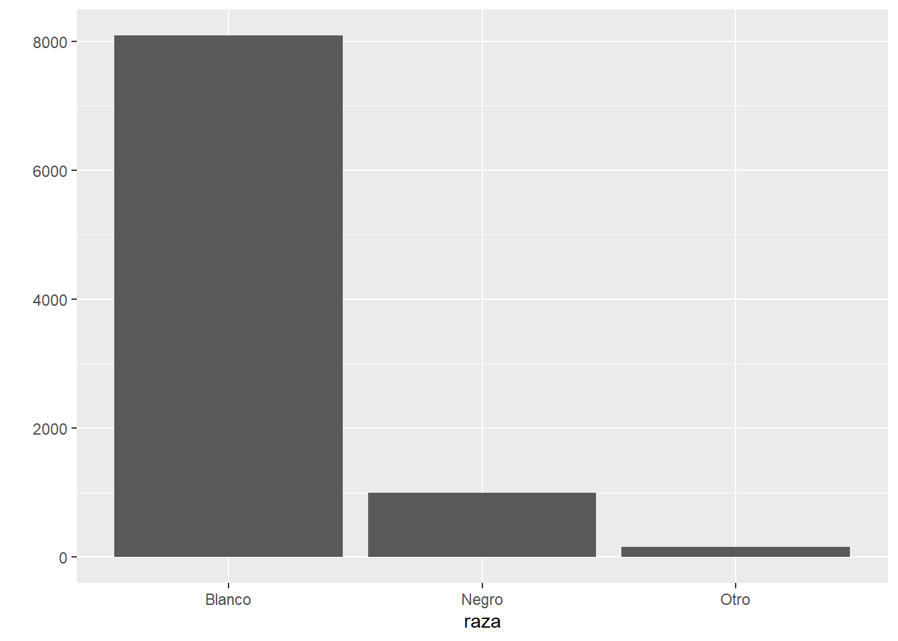
qplot(raza,data=nhs,fill=sexo,color=I("black")) #Distribución del sexo segun la raza ```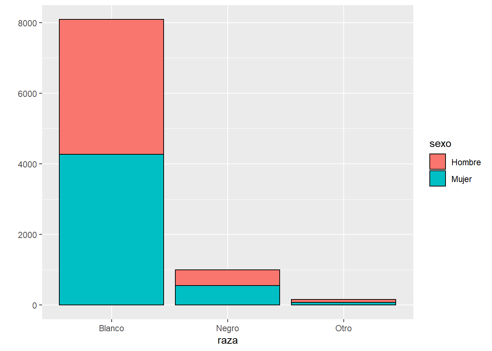
Utilizando el argumento fill se puede ver como varia la distribución de una variable respecto a otra (aquí el sexo según la raza). El gráfico obtenido resulta poco claro y veremos más adelante como mejorarlo.
Representar la distribución del “sobrepeso” (imc>25) según la raza, utilizando la muestra de la encuesta nacional americana.
1.2 Relación entre dos variables
1.2.1 Diagrama de dispersión
Para describir la relación entre dos variables cuantitativas se suele utilizar gráficos de dispersión. Estos gráficos describen esta relación mediante una nube de puntos en un plano cartesiano. Cada punto de la nube corresponde a una fila de la base de datos y cada una de las variables corresponde a un eje. En el gráfico siguiente se describe la relación entre las horas de sueño y el peso del animal:
qplot(bodywt,sleep_total,data=msleep,xlab="peso (en kg, escala log)",log="x")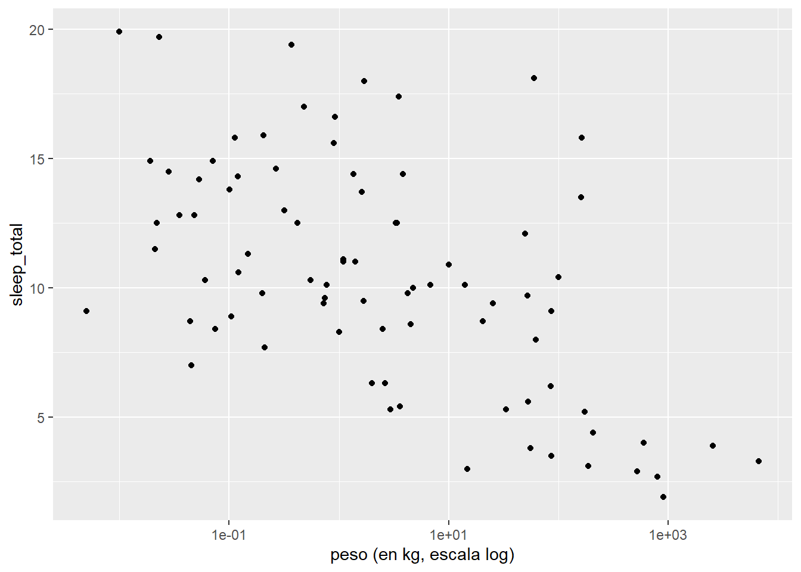
Ajustando una curva suave (“smooth”) a la nube de puntos, se puede apreciar mejor la tendencia en esta relación:
qplot(bodywt,sleep_total,data=msleep,log="x",geom="smooth")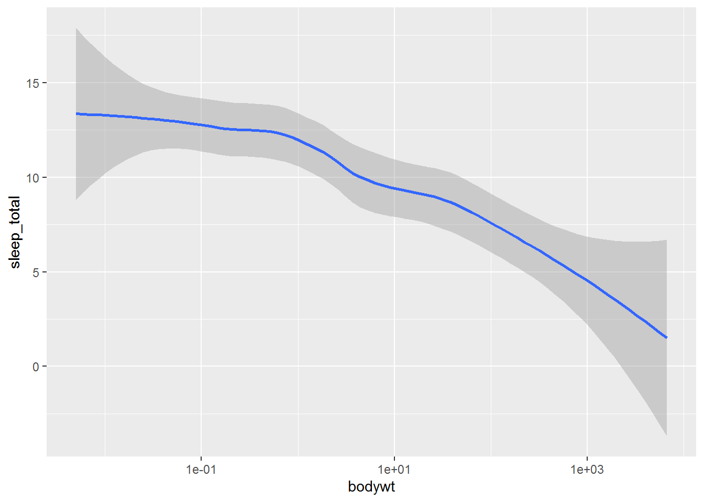
#qplot(bodywt,sleep_total,data=msleep,log="x",geom="smooth", method="lm") ## para ajutar una recta; "lm": linear modelPara evitar los problemas de solapamiento de puntos en la representación se puede poner algo de ruido en los datos ( geom="jitter" ), jugar con el tamaño de los puntos (size) o utilizar el parámetro de transparencia (alpha):
qplot(edad, imc,data=nhs,alpha=I(.1),size=I(1))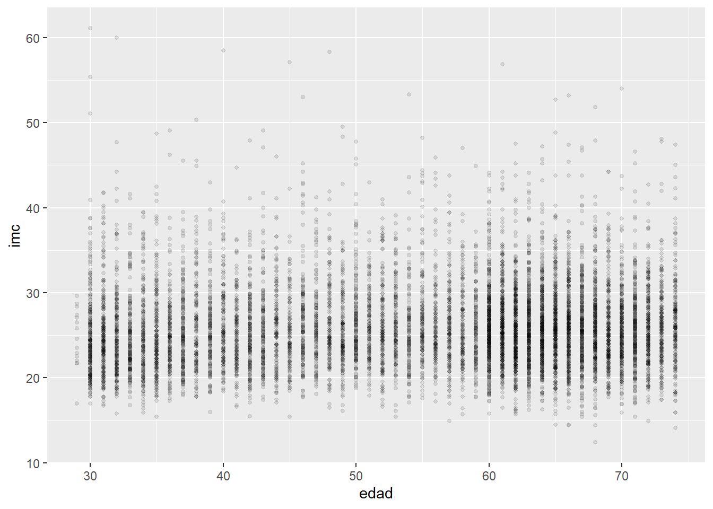
#qplot(edad, imc,data=nhs, alpha=I(.1),size=I(1), geom="jitter") #Mejor resultado añadiendo algo de ruidoUtilizando la encuesta nacional americana, describir la relación entre la edad y la presión arterial sistólica. En un mismo gráfico, describir como esta relación cambia con el sexo.
1.2.2 Dotchart
Si una de las variables es categórica y tiene muchas categorías, el gráfico de dispersión puede ser también apropiado:
qplot(sleep_total,order,data=msleep,col=vore) 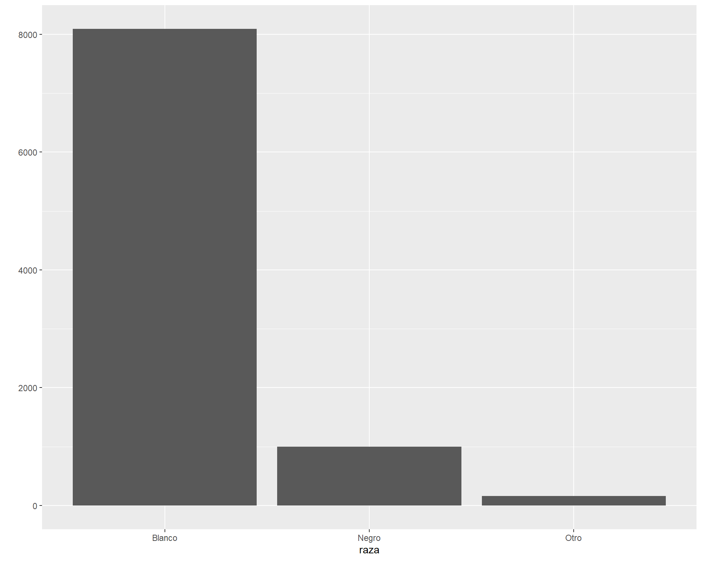
Pero, es recomendable para mayor claridad ordenar la variable categórica de acuerdo a la otra variable:
qplot(sleep_total,reorder(order,sleep_total),data=msleep,col=vore,ylab="horas de sueño")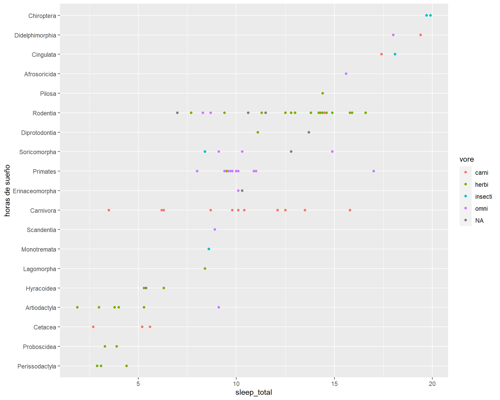
Describir con un gráfico similar al anterior, los datos de la base de datos islands sobre superficies de islas. Puede ser oportuno recurrir a una escala log.
1.2.3 Relación con una variable temporal
Si una de las variables es el tiempo, a menudo es conveniente recurrir a lineas (geom="line") en vez de puntos para representar la evolución de la otra variable.
require(gapminder) #base de datos sobre esperanza de vida según caracteristicas socio-demograficas del pais
datos=subset(gapminder,country %in% c("Spain","Greece","Poland")) #sólo se consideran España, Grecia y Polonia
qplot(year,lifeExp,data=datos,geom="line",color=country)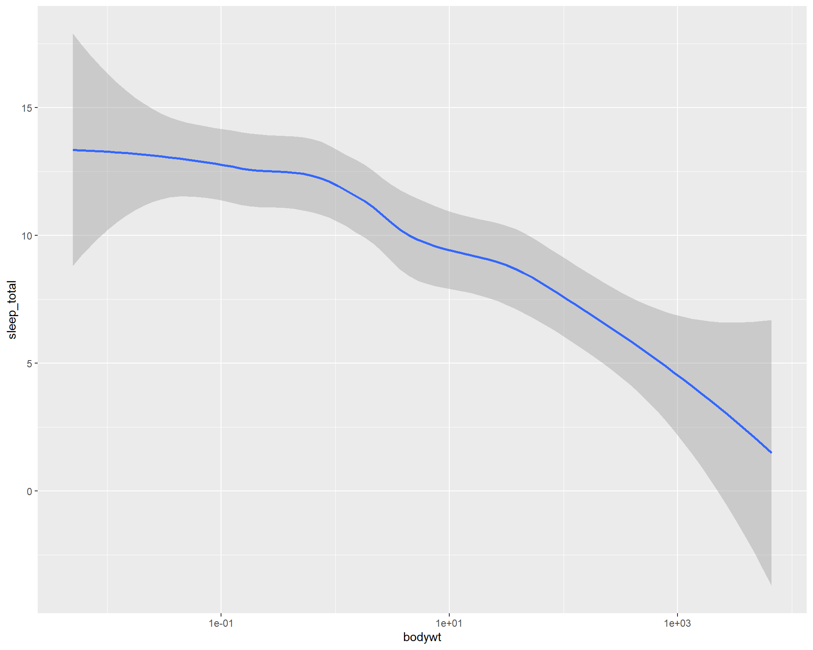
Sin embargo para representar la tendencia se utilizará la opción geom="smooth":
qplot(year,lifeExp,data=gapminder,geom="smooth",color=continent,se=FALSE) #se=FALSE para quitar intervalos de confianza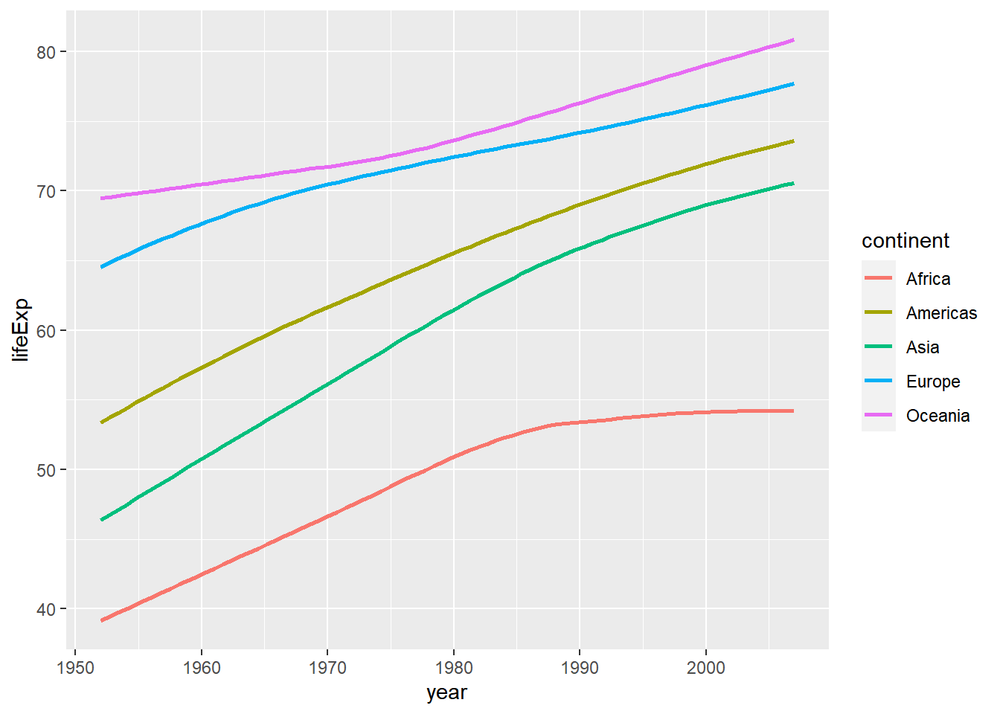
Describir con gráficos similares a los anteriores, los datos de la base de datos cancer sobre la evolución de las tasas de mortalidad por cáncer en España en el periodo 1975-2012. Empezar por ejemplo, representando la evolución de la mortalidad por cáncer de pulmón según el sexo.